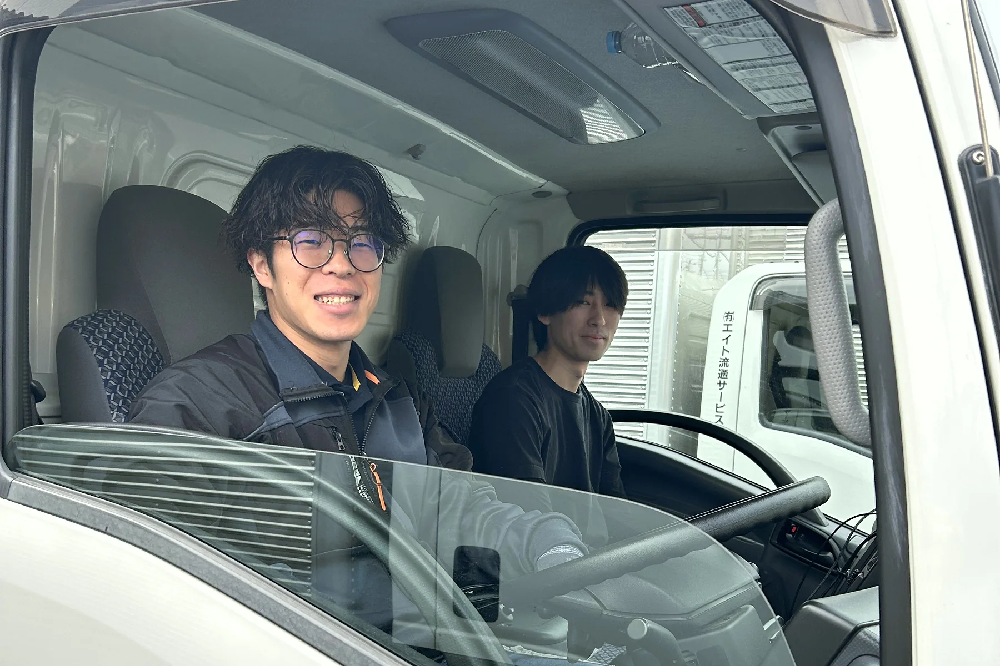

ENTRY
気になったら、まずLINEで。
「話だけ聞きたい」「条件だけ知りたい」でも大丈夫。堅い面接はしません。カジュアル面談のあと、アルバイトとして実際に働いてみてから決められる「お試し入社」もできます。
LINEで連絡カジュアル面談お試し入社（アルバイト）入社
返信は営業時間内（8:00〜17:00）になることがあります。お気軽にどうぞ。

配送も、エアコン工事も。
AIに取られない手に職を、先輩がイチから教えます。

START
配送業務でマッチョになりたい方、歓迎します。
これからのAI時代には、必ず手に職が有利になります。
NOW HIRING
応募の前に、条件を聞くだけのお電話でも構いません。
正社員
未経験で、月給34万円から。賞与は年3回。家電を2人1組でお届けし、設置・取付まで行います。エアコン工事の技術は、先輩がイチから教えます。
アルバイト
日給11,980円＋交通費1,000円。運転はしません。助手席で現場へ向かい、2人1組で作業します。日払い・週払い、単発・短期もOK。
01 ／ どんな仕事か
重い家電を運び、お客様のご自宅に取り付けて、「ありがとう」を直接もらう。機械には代わりのできない、体と技術の仕事です。だから、一生ものの手に職がつきます。

FIT
正社員
アルバイト（配送アシスタント）
REQUIREMENTS
条件は2026年9月時点のものです。ご不明な点は、応募を決める前の確認だけのお電話でも構いません。
| 給与 | 月給340,000円〜（未経験スタートの額） 賞与 年3回（7月・12月・3月） 実例：4年目で40万円、7年目で46万円（いずれも未経験入社） |
|---|---|
| 仕事内容 | 家電を2人1組でお届けし、設置・取付まで。 エアコン工事は、先輩がイチから教えます。未経験・高卒歓迎。 |
| 勤務地 | 浦安本社（千葉県浦安市富士見3-11-1） 埼玉営業所（埼玉県新座市野火止2-11-25） |
| 勤務時間 | 7:00〜17:00（休憩1時間）・残業なし 現場の約半分は13:00ごろに終わります |
| 休日 | 週休2日 |
| 待遇 | 社会保険完備／生命保険／家族手当／交通費支給（規定内）／制服貸与 |
| 給与 | 日給11,980円＋交通費1,000円 日給保障付き／日払い・週払いOK |
|---|---|
| 仕事内容 | 配送の助手。運転はしません。免許も要りません。 助手席で現場へ向かい、2人1組で作業します。 |
| 勤務地 | 埼玉県新座市野火止2-11-25（最寄り駅まで送迎します） |
| 勤務時間 | 8:30〜17:30 現場の約半分は13時で終わります（早く終わっても日給は同じ） |
| シフト | 単発・短期OK／現地集合・現地解散も可 |
※勤務時間・シフト・支払いの条件は、時期によって変わることがあります。最新の条件はお電話でご確認ください。
FAQ
はい。社員26人のうち24人が未経験スタートです。2人1組で伺うので、先輩がイチから教えます。
正社員（家電の配送・設置スタッフ）と、アルバイト（配送アシスタント・助手）です。アルバイトは運転しないので、免許は要りません。
正社員は月給34万円から・賞与年3回。アルバイトは日給11,980円＋交通費1,000円で、日払い・週払いにも対応しています。
カジュアル面談のあと、アルバイトとして実際に働いてみてから決められる「お試し入社」ができます。働いてみてから、じっくり決めてください。
大丈夫です。LINEで「話だけ聞きたい」と送ってください。返信は営業時間内（8:00〜17:00）になることがあります。
重い家電は2人1組で運びます。運び方の手順が決まっているので、少しずつ慣れていけます。
ENTRY
「話だけ聞きたい」「条件だけ知りたい」でも大丈夫。堅い面接はしません。カジュアル面談のあと、アルバイトとして実際に働いてみてから決められる「お試し入社」もできます。
LINEで連絡カジュアル面談お試し入社（アルバイト）入社
返信は営業時間内（8:00〜17:00）になることがあります。お気軽にどうぞ。